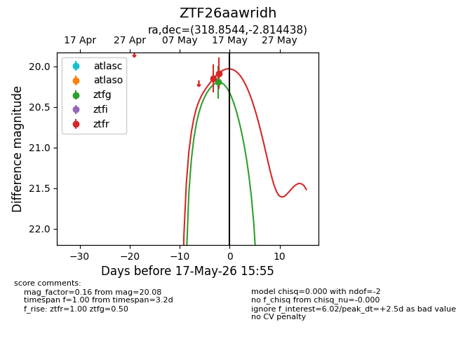
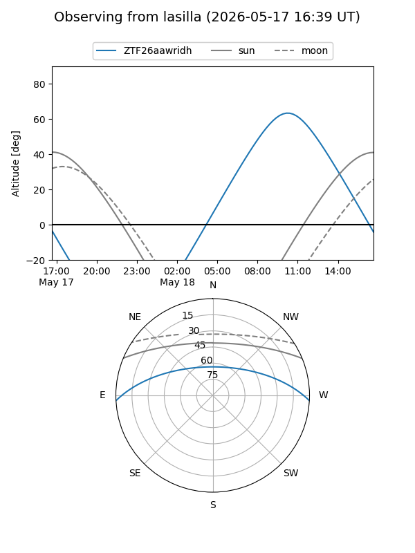
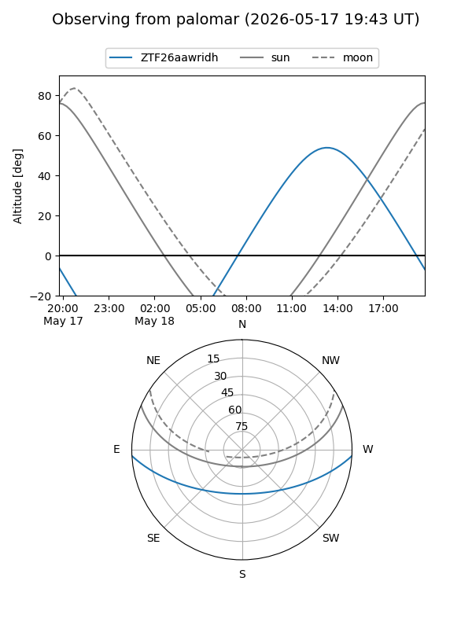
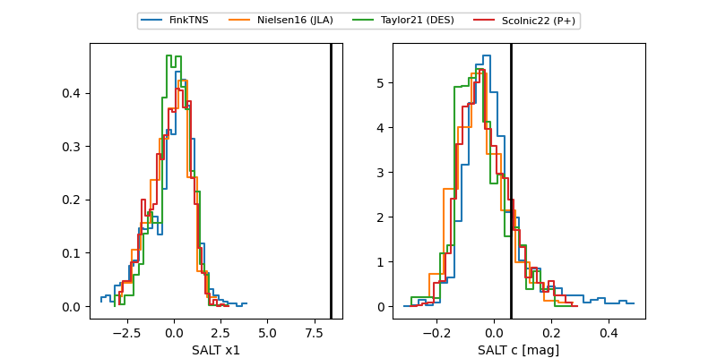

ZTF26aawridh
Target ZTF26aawridh at 2026-05-17 15:57
Aliases and brokers:
FINK: link
Lasair: link
ALeRCE: link
alt names
ZTF26aawridh (ztf,fink_ztf)
Coordinates:
equatorial (ra, dec) = 318.8544,-2.81444
equatorial (HMS+DMS) = 21:15:25.06,-02:48:51.98
galactic (l, b) = (48.4228,-33.01214)
Flags:
Photometry:
last ztfg=20.20, ztfr=20.08
1 ztfg, 2 ztfr detections
Lightcurve

Visibility


Additional plots
